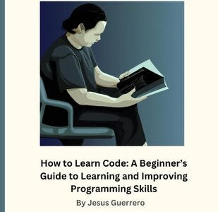
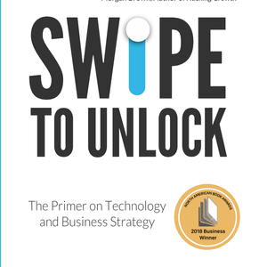
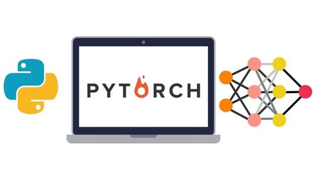

There comes a point where you become self-sufficient as a learner. Meaning, you can learn on your own and fast. Tweaking your ability to learn gives you an edge almost making you appear like a genius at high learning speeds.
For this purpose these 4 books and courses were chosen. As a programmer you can multiply your learning rate/hour by 2x or 3x had you never encountered this knowledge. My encouragement is to take the chance and read these books and take these courses (if you want that language).
Each and every book and course here, I have gone through in completion. These and many more courses and books have shaped my ability to learn code quickly and efficiently.
This post may contain affiliate links. Meaning, I get a commission if you purchase through my links, at no cost to you
4 Books About Learning Code
To teach you to teach yourself. These are the best books I have encountered. Those that teach you how to learn learning. You are not learning Computer Science or code, you are teaching yourself to become a learner through a book.
How to Learn Code
Here we focus on your ability to learn programming with inspirational writing and years of refined research. There is nothing else out there like this book at the moment. How to Learn Code is focused purely on your ability to understand code itself.
Try How to Learn Code
Admittedly, I wrote this book. I love it, I think every beginner needs to read this. I have curated the best advice for learning code from all my time research learning skills.
The text is inspired by A Mind for Numbers by Barbara Oakley and How to Read a Book by Mortimer Adler. It is meant to sequel A Mind for Numbers but applied solely to learning code.
How to Read a Book was all about learning text so I combined theories of general learning and learning code into one amalgamation. Even the cover of How to Learn Code takes after the original How to Read a Book cover.
A Mind For Numbers: How to Excel at Math and Science

This is perhaps the best book on learning technical skills. There is no focus on coding here, but Dr. Oakley covers everything else.
It is all about learning technical skills like engineering, math & programming over time.
It is meant to make learning these skills faster and with greater ease.
Try A Mind for Numbers.
It would be a good idea to first read How to Learn Code then after A Mind for Numbers. They are meant to compliment each other and increase your learning rate/hour together.
Swipe to Unlock: The Primer on Technology and Business Strategy
You will be surprised how useful it is to learn systems. As a developer, the end goal is to contribute to an entire software/hardware system for a company
To do this we have to know what a system is. Swipe to Unlock is the book on systems in business.
Systems are a mystic practice. The entire purpose of systems is to use what already exists and combine them into some live monstrosity.
We don't really know how it works. We just use libraries and operating systems to build an enterprise.
To a beginner systems appear impossible to understand for this reason.
Swipe to Unlock is all about finally understanding how the whole system works. Not to the granular detail, but how the systems work in its abstraction.
The authors teach us how an entire system of technology works in enterprise. From cloud systems to full stacks.
We learn how software comes together to form an entire enterprise from the ground up. Very good book for software developers.
Try Swipe to Unlock
The Complete Software Developer's Career Guide

John Sonmez is an excellent writer. It is a huge book at nearly 800 pages covering many topics all with a great reading experience. The book covers so much on programming there will always be sections that apply to you as a coder.
It covers topics from learning programming, jobs searching and keeping a job. Much of it is evergreen.
My only stifle is his outdated approach to job searching. John Sonmez speaks on how to get interviews and work in 2017 which was an entirely different marketplace.
It does not help with the dilemmas we have to today in searching for work. But, the sections on keeping a job still apply. The main evergreen contents of this 800 page behemoth are the learning programming and keeping a job sections.
Try The Complete Software Developer's Career Guide
5 Udemy Courses About Code
These are each really great resources for learning a language and web development. These Udemy courses are about learning programming. Not learning to learn, but actually learning a language or niche.
I have completed all these courses but the C++ masterclass. I finished the C++ course halfway but the first half was great. The instructors cover topics in depth from beginning to end masterfully.
The Complete Python Bootcamp From Zero to Hero in Python

Besides this programming fundamentals video. Jose Portilla is the best instructor I have ever encountered for programming fundamentals. This Python course covers foundations of programming with amazing precision, lecture quality and a great pace.
The way he builds on previous complexity and teaches on previous lessons is just amazing.
I recommend all of his classes. If you see Jose Portilla as a Udemy course instructor, you know it will be a good class.
Try Zero to Hero Python Course
Python and Django Full Stack Web Developer Bootcamp

I am aware this is a Python course from 2019. But the HTML/CSS/JS sections are extensive and extremely well done. The introduction to JQuery, vanilla Javascript, CSS, the Document model is just, yea I can't offer higher praise.
I have bought and gone through many courses, books and lectures on web development. Out of all of them, this course was the best on web development.
Try Python and Django Full Stack Web Developer Bootcamp
PyTorch for Deep Learning with Python Bootcamp
As always Jose Portilla does a great job explaining fundamental deep learning topics. He uses PyTorch to teach.
It is an evergreen course so you can ignore the 2019 label on the update.
You are not meant to master PyTorch exactly with this course but learn the basics of Machine Learning from tensors to architectural design.
Don't shy away from this particular course just because its last update was in 2019. To learn about RNN, CNN, ANN architectures are foundational to future machine learning studies.
Many of the newer architectures such as diffusion and transformers are built on these fundamentals. And Jose Portilla covered these well.
Just note this is more tailored to those studying machine learning in general and is not meant for starting up a machine learning business or custom model.
Instead it is toy models to help you understand how deep learning works as a practice.
Try PyTorch for Deep Learning with Python Bootcamp
The C++20 Masterclass : From Fundamentals to Advanced

The reason I recommend this one is its comprehensive nature to C++. The teaching is pretty good, the pace is pretty good.
Its only bad trait, it is a little difficult to retain all the information. The instructor doesn't give great coding exercises to do outside the lectures.
You pretty much need a C++ project at the same time, which is why I stopped half way personally. I noticed I was not retaining all the information.
But courses like these, dry and comprehensive, are really good reference videos.
Meaning, if you are in a C++ project and you need to learn about a specific topic you can use this course as a reference. You can CTRL+F the course outline, find the topic and learn about it on the spot.
Try The C++20 Masterclass : From Fundamentals to Advanced
Java 17 Masterclass: Start Coding in 2024

Tim Buchalka is a good teacher. Though not as good as Jose Portilla in the above courses. This Java course is about equal to the C++ 20 course on overall quality and comprehensiveness.
The main issue behind this course is its dryness and lack of great exercises. I found myself halfway being unable to retain the information.
Thankfully I had a Java project to use almost all topics in the course in code. And, I was able to finish it.
It is a great reference for overall Java. The course has been around since Java 11 and is meant to stay up to date with the latest LTS of Java. Sometime later this year Tim will be posting Java 21 material which I will diligently go through.
Try Java 17 Masterclass: Start Coding in 2024
Anywho, I hope you learned something...
CTA: Check out my newsletter
Happy coding!
Resources
Are full courses really that useful? Do Full Courses Really Help You Become a Great Coder?